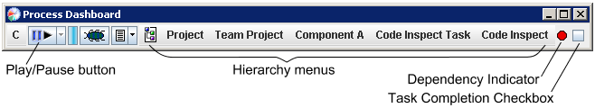

As you perform the tasks in your project plan, you will find earned value to be the most important means of gauging your progress. Earned value can tell you if you are ahead or behind schedule, whether work is taking more or less time than expected, and even whether you are projected to finish on time. To calculate earned value, the dashboard needs to know the actual amount of time you spend on each task, as well as the date each task is completed. The dashboard makes it easy to collect this information.
The instructions below provide a quick introduction to several commonly used dashboard features. For more information, view the dashboard's online user manual by choosing Help from the C menu.

For convenience, you can choose to work through the tasks that have been assigned to you for this project. Use the icon to the left of the hierarchy menus to select the earned value task list you're using for this team project. Then, the hierarchy menus will show you the tasks you need to perform, listed in chronological order as they appear in your task list. (To change the chronological order of these tasks, see the discussion of "Flat View" in the "Managing Your Personal Earned Value Schedule" section below.)
There is a small down-arrow to the right of the play/pause button. Clicking this down arrow will display a menu of tasks to which you have logged time recently. You can make a selection from this list to quickly resume a recently interrupted task.
Checking the box will mark the current task complete as of the current date and time. If a task was completed in the past but you forgot to mark it complete, you can edit the completion date manually in the task list of your earned value schedule.